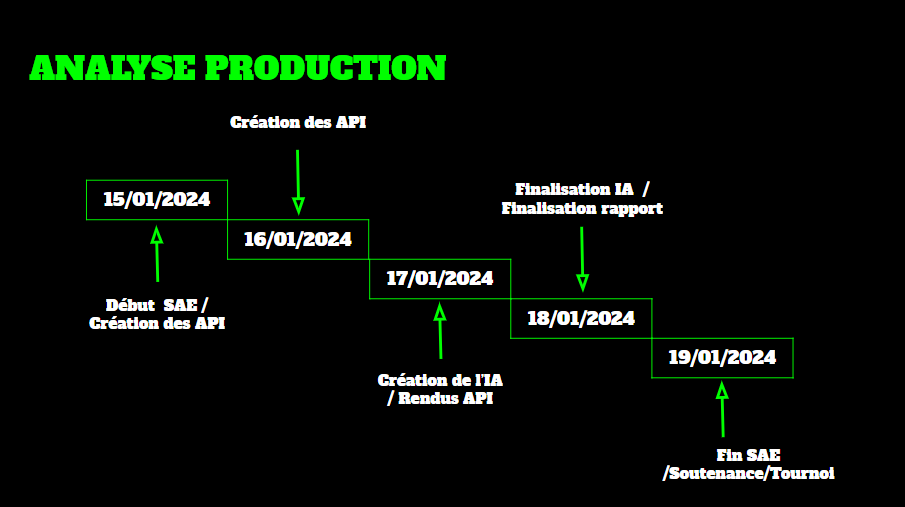
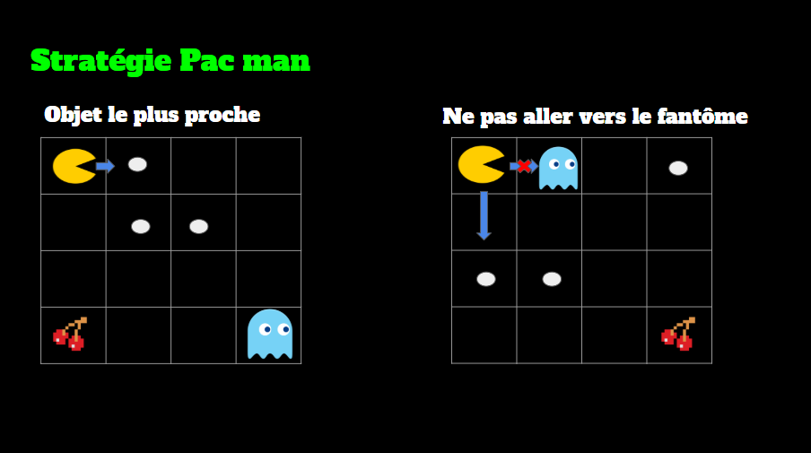

Détails : IA Pac-Man

Analyse de la production
Ici, j'explique comment s'est déroulé le développement du projet. J'ai commencé par définir l'architecture globale, en séparant la gestion du jeu de l'IA. Cette section détaille le planning de production, les jalons de développement (milestones) et comment nous avons organisé les tâches en équipe pour respecter les délais.

Stratégie de Pac-Man
Cette section détaille l'IA de Pac-Man. Le code, écrit en Python, analyse le plateau pour détecter les objets les plus proches : les petites boules pour les points et les grosses boules pour l'effroi. L'objectif est de calculer le chemin le plus court tout en évitant les fantômes. J'ai implémenté une logique de priorité pour maximiser le score.
Stratégie des fantômes
Les fantômes utilisent une IA pour poursuivre Pac-Man. Ils n'ont pas un mouvement simplement aléatoire. J'ai codé une logique de prédiction qui essaie d'anticiper la prochaine direction de Pac-Man pour le prendre en tenaille. Une machine à états (state machine) a été mise en place pour gérer leurs comportements : Poursuite, Effroi, Retour à la base.
Facilités et difficultés
Les API
Implémentation de la plupart des fonctions sans réelle difficulté.
Analyse du plateau et prochaine intersection.
L'IA
Trouver des idées de stratégies.
Coder des stratégies trouvées.